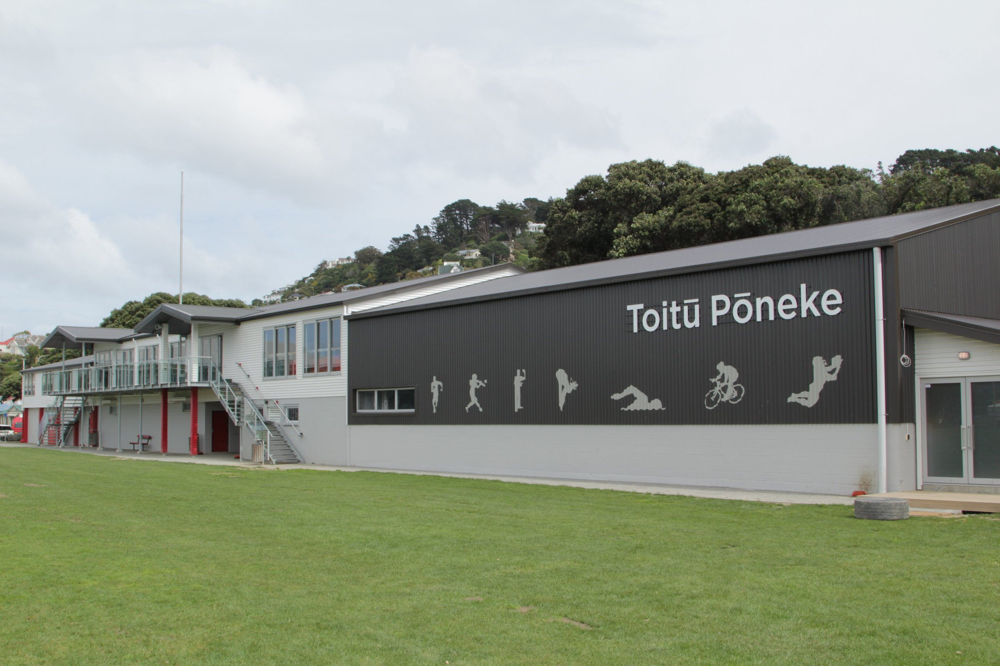
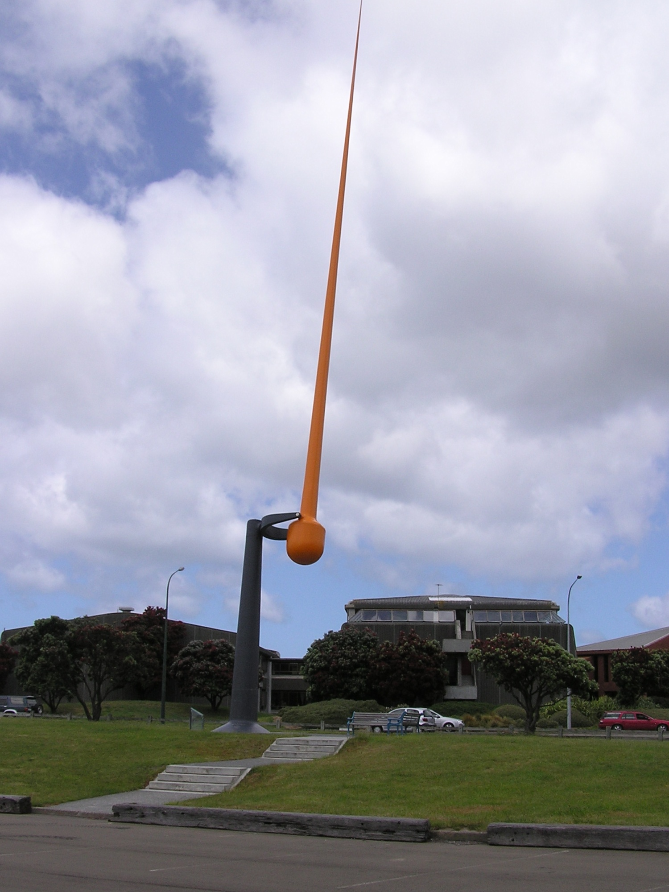

Wellington · Flagship Event
One morning.
Many ways
to move.
Run one loop or all seven, walk with friends, join a class or cheer on your community. There’s a place for you at our biggest event of the month.
Check-in opens at 4:30am. Join us for movement, recovery and community from 5am-midday. Runners and walkers check in upstairs in the South Lounge 15 minutes before their hourly start.
Free general admission and running. Movement classes are $5 each, supporting Movember. Book your place on Humanitix.

Kilbirnie, Wellington
Start here.
We’ll guide you.
Toitū Pōneke — The Hub
49 Kilbirnie Crescent, Kilbirnie, Wellington
Enter through the main doors and head upstairs to registration in the South Lounge, our main event room. Accessible access is available, and volunteers will be there to guide you.
Registration and ticket check-in
Please have your Humanitix ticket and QR code ready on your phone for our volunteers to scan. Your ticket is in your Humanitix confirmation email. If you’ve booked more than one activity, have the relevant tickets available for each check-in.
Runners and walkers: registration opens in the South Lounge 30 minutes before your chosen hourly start. Be checked in and ready to leave with your lead 15 minutes before the hour. Your group lead will brief you and walk with you to the wind sculpture near Evans Bay, using the pedestrian crossings. Both runs and walks start at the wind sculpture on the hour. Please register at the venue first.
Movement classes: bring the Humanitix ticket for each booked class. Book a separate $5 ticket for each class; free General Admission does not reserve a class place. Class registration opens 15 minutes before the class starts and closes when it begins.
Kids Zone: caregivers must sign children in and out at the Kids Zone in the North Lounge.
Can’t find your ticket? Ask a registration volunteer for help.
Street parking is available in surrounding Kilbirnie streets. There is no dedicated event car park, so please allow extra time.
A bag drop is available at registration, with volunteers helping store belongings. Keep valuables with you. Changing rooms are also available at the venue.
One loop. A few.
All seven.
Our backyard-ultra-inspired challenge offers seven approximately 6.7km loops, starting hourly from 5am through to 11am. Join one, a few or all seven for up to approximately 46.9km. It’s about showing up and supporting each other.
Prefer to walk? Join a guided 30-minute walk on the same route: 15 minutes out and 15 minutes back, at a comfortable pace. Your walk lead will guide the turnaround; you don’t need to complete the full loop.
Runs and walks use the same hourly starts and check-in times below. Meet your lead in the South Lounge before walking together to the start.
If you need to stop, withdraw or return separately, tell your group lead so everyone is accounted for. Follow the briefing, use designated crossings and share public paths respectfully.
- Loop 01
Check-in 4:45am
Ben Edusei
- Loop 02
Check-in 5:45am
Social Project Run Club (SoPro Run Club)
- Loop 03
Check-in 6:45am
Jog On
- Loop 04
Check-in 7:45am
Change Fitness — Nathan Martin
- Loop 05
Check-in 8:45am
All Good Wellness Club
- Loop 06
Check-in 9:45am
Mo Bros
- Loop 07
Check-in 10:45am
Zone Blue Run Club
Know the route.
Find your start.
Explore the approximately 6.7km route below, or open it on Strava for a closer look. Your group lead will explain the route and crossings at the briefing.
Check in at the South Lounge 15 minutes before your start. Your lead will walk with you to Zephyr, the wind sculpture near Evans Bay where the runs and walks begin. Look for the tall orange wind wand pictured below.
The route in words: from the wind sculpture, follow the Evans Bay waterfront north past Hataitai and Roseneath to the halfway marker shown on the map, then return along the same route. The full run is approximately 6.7km. Your lead will explain the crossings and turnaround at the briefing.
Walkers follow their lead for 15 minutes out and 15 minutes back; the halfway marker on the map is for the full running route.
Explore the route on Strava (opens in a new tab)

Find your class.
Move your way.
Try yoga, mat Pilates, boxing or functional training with our Wellington movement partners. Sessions run for 45 minutes, with 10-minute changeovers. Awhi Yoga and Wellbeing is delivering all yoga sessions.
Book a separate $5 ticket for each class. Each session has space for 20 participants. Free General Admission does not reserve a class place; check live availability on Humanitix.
Allow enough time between a run or walk and a class. Kids Zone opens at 7:30am, after the first two class start times.
Book movement classesMeet your movement team
Awhi Yoga and Wellbeing — Tom Brotherstone
Awhi co-owner Tom is an E-RYT 500 yoga teacher and Brazilian Jiu Jitsu black belt. His approachable teaching blends yoga philosophy with movement, connection and wellbeing.
Soul Pilates — Olivia
Olivia owns Soul Pilates in Kāpiti and Wellington CBD. She helps people feel stronger and more confident through movement, and is joining us to support men’s mental health awareness.
Kimi Young — Pilates
Wellington-based Kimi brings a background in dance and choreography to classes that blend mindful movement, mobility, strength and breathwork.
In Motion Studio — Pilates
This Lower Hutt studio brings a welcoming, community-focused approach to building strength, confidence and connection through Pilates.
Wellington Boxing Gym — Sean Echano
Boxing has played an important role in Sean’s wellbeing. He’s sharing a sport that builds confidence, brings people together and offers space to switch off.
BFT Wellington East — Abbas and Gen
Based in Kilbirnie, Abbas and Gen bring the supportive spirit of their community, where movement, shared goals and friendships brighten people’s lives.
DSTRCT-04
This Wellington strength gym helps people learn to lift properly and train with purpose, supported by structure, accountability and an encouraging community.
Body Shot Fitness
For around 10 years, Body Shot Fitness has welcomed Wellington locals into boxing and circuit classes, building connection alongside movement.
F45 Basin Reserve — Aimee-Jo
Studio Manager Aimee-Jo has been part of F45 Basin Reserve for six years and is also a FIBA basketball referee. She wants people to feel comfortable checking in, speaking up and asking for help.
A morning for
the whole family.
Our supervised Kids Zone offers games, crafts and activities for children aged 5–12 while parents and caregivers take part.
7:30am–midday · North Lounge
Up to 20 children at a time
Book a separate free Humanitix ticket for each child, covering the time they will attend.
Sign children in at the Kids Zone in the North Lounge, then collect and sign them out from the same location. Only an authorised adult can collect a child.
Caregivers must remain contactable throughout the booked session. No supervision is available before 7:30am; please plan your activities around opening and collect your child by midday.
Book Kids ZoneCome prepared.
Stay connected.
Make time to recover, refuel and connect between activities. Our volunteers and event team will be there to help you find your way.
-
Recovery + reset
O-Studio’s recovery experiences are first come, first served on the day, subject to availability and the team’s guidance. StretchLab appointments are fully booked. If you have a booking, follow your confirmation instructions.
-
Food + hydration
Food will be available to purchase, including our bake sale. Elyte Hydration will provide water stations at the venue and the wind sculpture. Bring your own water bottle.
-
What to bring
Wear comfortable movement gear and familiar shoes. Bring a water bottle, weather layers, sun protection when needed, snacks or fuel, and any personal medication or equipment. Reflective or high-visibility clothing is sensible for early starts.
-
Help when you need it
First aid will be based at Toitū Pōneke, proudly supported by Wellington Free Ambulance. Event staff will also be at the wind sculpture. Speak to a volunteer or team member if you need help. For an immediate emergency, call 111.
-
Weather + updates
Check Move to Improve’s Instagram for last-minute updates. If the forecast is unfavourable, organisers will make a weather decision on the evening of Friday 20 November and share any changes there.
Photography and video may take place. Let the event team know if you would prefer not to be deliberately featured.
Show up your way.
Every movement counts.
You don’t have to complete seven loops for your contribution to matter.
Come for an hour or spend the morning with us. Move, volunteer, cheer, recover, fundraise or simply be part of the community.
We’ll aim to wrap up with a short community thank-you at midday, once all run and walk groups have returned safely.
Book or view your ticket